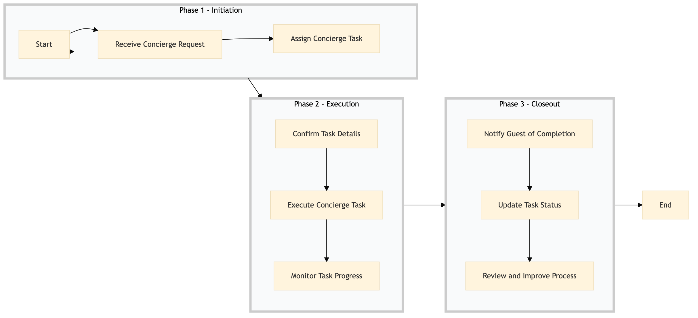

| Role | Steps |
|---|---|
| Front Desk Agent | 1.1 |
| Concierge Manager | 1.2 3.3 |
| Concierge Team Member | 2.1 2.2 3.1 3.2 |
| Step | Name | Role | System | Input | Output | KPI | Dec? | Exc? | Pain Point / Risk |
|---|---|---|---|---|---|---|---|---|---|
| 1.1 | Receive Concierge Request | Front Desk Agent | Oracle OPERA Cloud | Guest's request via phone, email, or in-room device | Concierge request logged in Oracle OPERA Cloud | Response time within 30 seconds | N | Y | Handling urgent requests while managing multiple guests. |
| 1.2 | Assign Concierge Task | Concierge Manager | Oracle OPERA Cloud | Logged concierge request | Task assigned to a concierge team member | Assignment within 1 minute | N | Y | Balancing workload among concierge staff. |
| 2.1 | Confirm Task Details | Concierge Team Member | Oracle OPERA Cloud | Assigned task details | Confirmed task with guest via phone or email | Confirmation within 5 minutes | N | Y | Ensuring clear communication of task requirements. |
| 2.2 | Execute Concierge Task | Concierge Team Member | Oracle OPERA Cloud, IDeaS G3 RMS | Confirmed task details | Task executed and documented in Oracle OPERA Cloud | Completion within 1 hour for standard tasks | Y | Y | Managing unexpected delays or complications during task execution. |
| 2.3 | Monitor Task Progress | Concierge Manager | Oracle OPERA Cloud, IDeaS G3 RMS | Task status updates | Progress monitored and adjustments made if necessary | Daily review of task progress | Y | N | Ensuring continuous oversight of ongoing tasks. |
| 3.1 | Notify Guest of Completion | Concierge Team Member | Oracle OPERA Cloud, IDeaS G3 RMS | Completed task details | Notification sent to guest via phone or email | Notification within 10 minutes of completion | N | Y | Ensuring timely feedback to guests. |
| 3.2 | Update Task Status | Concierge Team Member | Oracle OPERA Cloud, IDeaS G3 RMS | Guest's confirmation of task completion | Task status updated in Oracle OPERA Cloud | Status update within 5 minutes | N | Y | Accurate documentation of task outcomes. |
| 3.3 | Review and Improve Process | Concierge Manager | Oracle OPERA Cloud, IDeaS G3 RMS | Task completion data | Process improvements documented and implemented | Monthly review cycle | Y | N | Continuous process optimization for efficiency. |
This process outlines how a Marriott full-service hotel fulfills concierge requests using Oracle OPERA Cloud PMS and other integrated systems.